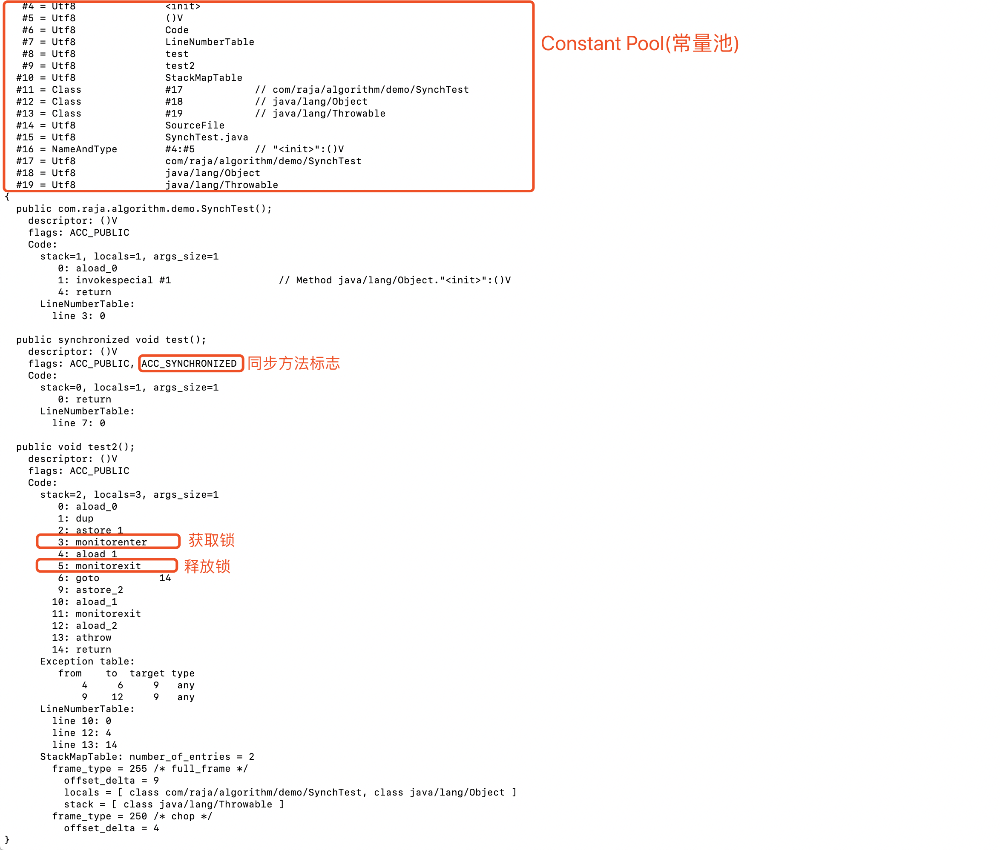
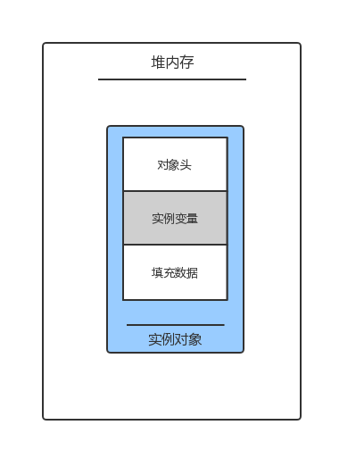
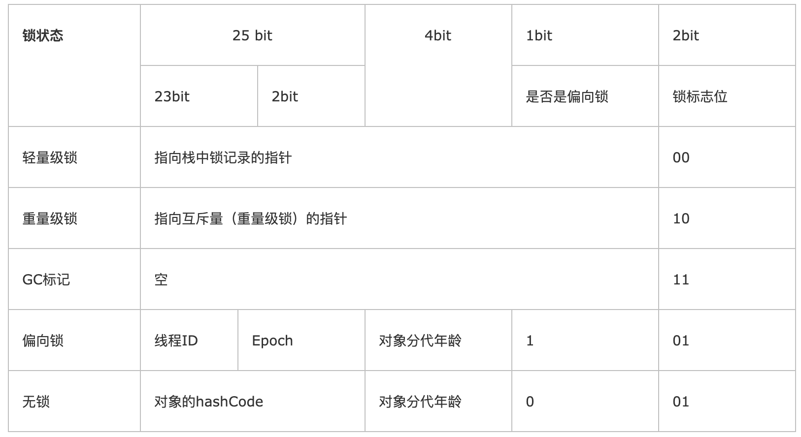

我们在学习 Java 并发编程的时候，看到的最多的就是 synchronized 关键字了，它可以解决很多线程安全问题，随着深入学习，我们知道 synchronized 是一个重量级锁，效率相对于 Lock 来说并不是那么好。但是经过 Java 几个版本的优化之后，synchronized 并不显得那么笨重了。下面我们来看一下 synchronized 的实现机制，和 Java 对它进行了什么样的升级。
实现原理
Synchronized 保证了方法或者代码块在运行时，同一时间只有一个线程可以执行，并保证了对共享变量的内存可见性。
Java 中 synchronized 集中实现方法：
- 非静态同步方法：锁住当前实例对象
public synchronized void test() {
}
- 静态同步方法：锁住当前类的 class 对象
public static synchronized void test() {
}
- 同步代码块：锁住括号中的对象
public void test() {
synchronized (this) {
}
}
我们利用工具查看生成的 class 文件，生成的 class 文件如下：

从以上 class 文件我们可以看出，同步代码块是通过 monitorenter 和 monitorexit 来实现的，同步方法是依靠方法修饰符中的 ACC_SYNCHRONIZED 实现。
- 同步代码块：moniterenter 指令会插入到同步代码块开始的位置，moniterexit 插入到同步代码块结束的位置，JVM 需要保证每个 monitorenter 都有一个 monitorexit 相对应。任何对象都有一个 monitor 与之相关联，当 monitor 被持有后，它将处于锁定状态。线程执行到 moniterenter 指令时，将会尝试获取当前对象对应的 monitor 所有权（这个过程就是获取锁）。
- 同步方法：同步方法中没有 monitorenter 和 monitorexit，取而代之的是在 flags 中添加了 ACC_SYNCHRONIZED 标识，JVM 通过该 ACC_SYNCHRONIZED 访问标志来辨别一个方法是否声明为同步方法，从而执行相应的同步调用（方法调用时，调用指令将会检查方法是否含有 ACC_SYNCHRONIZED 访问标志，如果有，调用线程将会先持有 monitor。如果同步方法执行期间抛出了异常，而且在方法内部无法处理异常，则这个方法所持有的 monitor 将会在异常抛到同步方法之外时自动释放）。使用调用该方法的对象或方法所属 Class 在 JVM 的内部对象表示 Klass 做为锁对象。
关于 monitorenter 和 moniterexit 这两条指令 在 JVM 的规范中有这样一句话：
Each object is associated with a monitor. A monitor is locked if and only if it has an owner. The thread that executes monitorenter attempts to gain ownership of the monitor associated with objectref, as follows:
• If the entry count of the monitor associated with objectref is zero, the thread enters the monitor and sets its entry count to one. The thread is then the owner of the monitor.
• If the thread already owns the monitor associated with objectref, it reenters the monitor, incrementing its entry count.
• If another thread already owns the monitor associated with objectref, the thread blocks until the monitor’s entry count is zero, then tries again to gain ownership.
以上引用也说明了，每个对象都关联了一个 monitor，如果一个monitor被占用则它处于锁定状态。线程在执行 monitorenter 指令时会尝试获取对象关联的 monitor 的所有权。
- 如果 monitor 的进入数为0，则该线程进入 monitor，并将进入数设置为1，该线程为该 monitor 的所有者。
- 如果一个线程已经占有了对象关联的 monitor，它会重新进入，并将进入数加1。
- 如果已经有另一个线程占有了该 monitor，则该线程会阻塞直到 monitor 的进入数为0，然后尝试获取所有权。
The thread that executes monitorexit must be the owner of the monitor associated with the instance referenced by objectref.
The thread decrements the entry count of the monitor associated with objectref. If as a result the value of the entry count is zero, the thread exits the monitor and is no longer its owner. Other threads that are blocking to enter the monitor are allowed to attempt to do so.
大致意思是：执行 monitorexit 的线程必须是 objectref 所对应的 monitor 的所有者。该指令执行时，线程会将 monitor 的进入数减1。如果进入数减1之后为0，则该线程退出 monitor 并且不再是它的所有者。被阻塞的其他线程将允许尝试获取所有权。
Java 对象头和 Monitor
Java 对象头
对象在堆内存中的布局分为三块区域：对象头、实例数据和对其填充。

- 实例变量：存放类和父类的属性信息，如果是数组，还包括数组的长度，这部分内存为4字节。
- 填充数据：JVM 要求对象的其实地址必须为8字节的整数倍，所以有可能数据需要填充（非必须）。
Java 的对象头是实现 synchronized 的锁对象的基础。一般情况，synchronized 使用的锁对象都存在 Java 对象头中。JVM 采用两个字节来存储对象头（如果对象是数组，则使用三个字节，多出来的字节存储数组长度），主要是由 Mark Word 和类型指针组成。
| 虚拟机位数 | 头对象结构 | 说明 |
|---|---|---|
| 32/64bit | Mark Word | 存储对象的 hashCode，锁信息、分代年龄、GC标志、偏向线程ID、偏向时间戳等信息 |
| 32/64bit | Class Metadata Address | 类型指针指向对象的类元数据，JVM 通过这个指针确定对象是哪个类的实例 |
由于对象头的信息是与对象自身定义的数据没有关系的额外存储成本，因此考虑到 JVM 的空间效率，Mark Word 被设计成一个非固定的数据结构，以存储更多有效的数据，它会根据对象状态的变化复用自己的存储空间。Mark Word 会根据程序的运行而发生变化（以下是32位虚拟机默认的存储结构和其他变化状态）。
32位 JVM 的 Mark Word 默认存储结构：
| 锁状态 | 25bit | 4bit | 1bit是否是偏向锁 | 2bit 锁标志位 |
|---|---|---|---|---|
| 无锁状态 | 对象HashCode | 对象分代年龄 | 0 | 01 |
状态变化（32位虚拟机）：

其中轻量级锁和偏向锁时在 Java 6 对 synchronized 锁进行优化后新增的。
Monitor
Monitor 可以被理解为监视器，在 Hotspot 中，它是由 ObjectMonitor 实现的（位于 HotSpot 虚拟机源码的 ObjectMonitor.hpp文件中，C++实现），其主要数据结构为：
ObjectMonitor() {
_header = NULL;
_count = 0; //记录个数
_waiters = 0,
_recursions = 0;
_object = NULL;
_owner = NULL;
_WaitSet = NULL; //处于wait状态的线程，会被加入到_WaitSet
_WaitSetLock = 0 ;
_Responsible = NULL ;
_succ = NULL ;
_cxq = NULL ;
FreeNext = NULL ;
_EntryList = NULL ; //处于等待锁block状态的线程，会被加入到该列表
_SpinFreq = 0 ;
_SpinClock = 0 ;
OwnerIsThread = 0 ;
}
ObjectMonitor 中有两个队列 —— _WaitSet, _EntryList（当多个线程同时访问一段同步代码时，首先会进入 _EntryList 集合，当线程拥有对象的 monitor 后，ObjectMonitor 会将 _owner 变量设置为当前线程，并将计数器 _count 加1，如果该线程调用了 wait() 方法，它将会释放当前持有的 monitor， _owner 将恢复为 NULL，同时该线程会进入 _WaitSet 等待被唤醒）。它们是用来保存 ObjectWaiter 对象列表（每个等待的线程都会被封装为 ObjectWaiter 对象），底层实现原理不再叙述(C++实现的，我也没看过)。我们可以用一张图来简单概述它的数据结构。

其中：
- Owner：初始化为 NULL，当线程成功拥有该锁时保存线程唯一标识，锁被释放后又置为 NULL。
- EntryQ：关联一个系统互斥锁（semaphore），阻塞所有试图锁住monitor record失败的线程。
- RcThis:表示blocked或waiting在该monitor record上的所有线程的个数。
- Nest:用来实现重入锁的计数。
- HashCode:保存从对象头拷贝过来的HashCode值（可能还包含GC age）。
- Candidate:用来避免不必要的阻塞或等待线程唤醒，因为每一次只有一个线程能够成功拥有锁，如果每次前一个释放锁的线程唤醒所有正在阻塞或等待的线程，会引起不必要的上下文切换（从阻塞到就绪然后因为竞争锁失败又被阻塞）从而导致性能严重下降。Candidate只有两种可能的值0表示没有需要唤醒的线程1表示要唤醒一个继任线程来竞争锁。
Java 中锁的优化
Jdk 1.6 对锁的实现做了大量的优化（轻量级锁，偏向锁，自旋锁，适应性自旋锁，锁消除，锁粗化），锁主要存在四种状态（依次）：无锁状态，偏向锁状态，轻量级锁状态，重量级锁状态。它们会随着锁竞争的激烈而升级，锁只能升级不能降级（为了提高获得锁和释放锁的效率）。
自旋锁
适应性自旋锁
锁消除
锁粗化
偏向锁
轻量级锁
重量级锁
通过对象内部的监视器 monitor 实现，而 monitor 的本质是依赖于底层操作系统的 Mutex Lock 实现，操作系统实现线程之间的切换需要从用户态到内核态的切换，切换成本非常高。
参考文章：